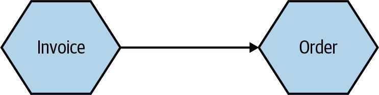

شکل 8-1. یک دید منطقی ساده از دو microservice
این دید منطقی از microservice های ما می تواند ثروت پیچیدگی را پنهان کند برای اجرای واقعی آنها در زیرساخت های واقعی. بیایید نگاهی به این بیندازیم که چه نوع جزئیات ممکن است توسط نموداری مانند این پنهان شود.
وقتی در مورد توپولوژی استقرار دو microservice فکر می کنیم (در شکل 8-2)، به سادگی یک چیز نیست که با چیز دیگری صحبت کند. برای شروع، به نظر می رسد کاملاً محتمل است که ما بیش از یک نمونه از هر سرویس داشته باشیم. داشتن چندگانه نمونه های یک سرویس به شما امکان می دهد تا بار بیشتری را مدیریت کنید و همچنین می تواند استحکام سیستم شما را بهبود می بخشد، زیرا می توانید به راحتی شکست یک نمونه واحد. بنابراین ما به طور بالقوه یک یا چند نمونه از Invoice داریم که با یک یا نمونه های بیشتر Order. دقیقاً چگونگی ارتباط بین این نمونه ها بسته به ماهیت مکانیسم ارتباطی، رسیدگی می شود، اما اگر ما فرض کنید که در این شرایط ما از نوعی API مبتنی بر HTTP استفاده می کنیم، یک بالابر بار به اندازه کافی برای رسیدگی به مسیریابی درخواست ها به نمونه های مختلف است، همانطور که می بینیم در شکل 8-2.
شکل 8-2. استفاده از یک تعادل بار برای نگاشت درخواست ها به نمونه های خاص Order microservice
220 | فصل 8: استقرار